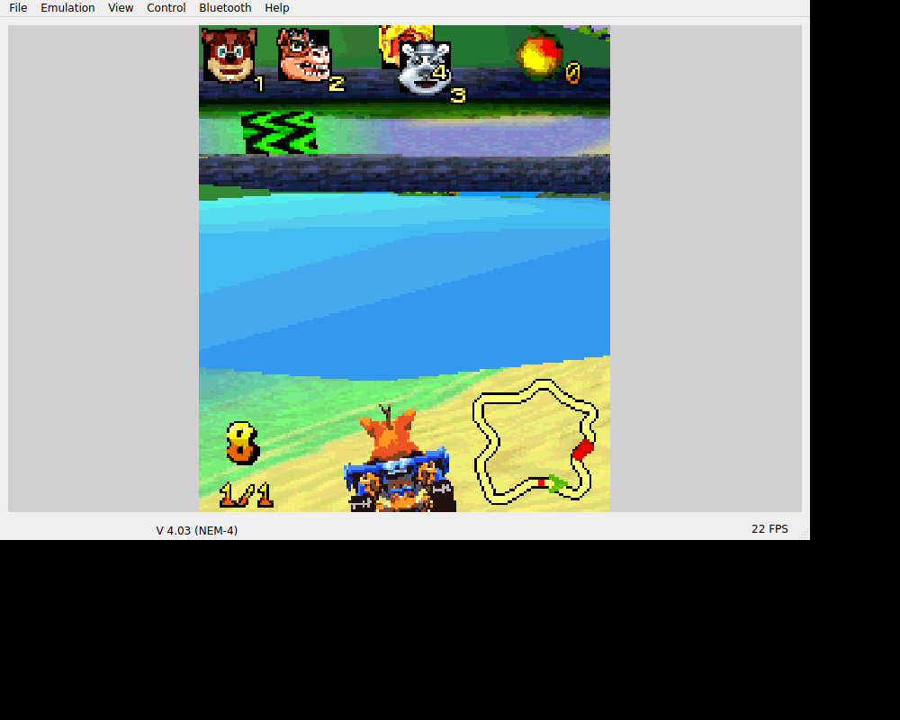

We could go through the original mode, character and track menus into a countdown and race. The control work was then about making those particular racing inputs readable on an Android screen.CN01
The countdown.

Crash driving in the original N-Gage race, retained from the v0.1.0 Linux EKA2L1 host run. The emulator window is preserved unchanged.
Open the image for the full original view.
CN90Numeric 5 confirmed menus and accelerated in the race. The other original actions were 6 for brake, 2 for hop/drift and 4 for an item; Down reversed when stopped. Those defaults described a specific game, not a generic racing-pad guess.CN01CN03
We kept the original keypad’s native D-pad separate from the digits. The N-Gage interface distinguished them, and treating them as interchangeable would have thrown that distinction away.CN03
The inherited road.
Ashen’s infrastructure and the unchanged Pocket Kingdom native core supplied the platform route, including original Nokia firmware. Existing saves survived seed preparation; historical host saves were not installed as fresh progress.CN04CN02CN03
The later package also kept an easy-to-miss technical limit visible: ZIP alignment had passed, while the native ELF still used four-kilobyte load segments. Passing the archive check alone was not proof of sixteen-kilobyte native page support.CN05
The later UI checks deferred native boot. The race image therefore remains the original host result that it is, rather than a new phone test or a claimed race win.CN02
About these records
The original racing route and unchanged image belong to historical Linux host execution. Later shell and archive checks do not establish a completed race, phone frame rate, control comfort or speaker output. Original EKA2L1/Nokia dependencies and the native alignment limit retain their recorded scope.
The receipts
Selected source lines, investigation notes and recorded feedback. Open a receipt for the original context and scope.
CN01 / Original countdown and race reached the hostHistorical host validation record
Source: Crash_Nitro_Kart_Bridge_v0.1.1_PRIVATE_CHECKPOINT.zip / Crash_Nitro_Kart_Bridge_v0.1.1_PRIVATE/evidence/host-execution.json · selected lines 1–16
{
"runtime": "EKA2L1 Linux host master-6ac519122",
"uid": "0x101FD3F1",
"verified": [
"original main menu",
"original mode/character/track selection",
"original race countdown and 3D race/HUD",
"native 5 menu confirm and acceleration",
"native selection key pause menu"
],
"audio_tested": false,
"physical_android_tested": false,
"completed_game": false,
"screenshots": "evidence/host/"
}CN90 / Historical image / Crash Nitro KartHistorical host capture
Source: Crash_Nitro_Kart_Bridge_v0.1.1_PRIVATE/evidence/host/host-driving.png
Retained historical host output. Original emulator chrome, where present, is part of the unchanged source image. No phone capture or phone performance is inferred.
Unchanged historical image. Source member: Crash_Nitro_Kart_Bridge_v0.1.1_PRIVATE/evidence/host/host-driving.png SHA-256: f880e27ad5d36cb070d84fa443a3cb0bd6b5c7a896cbb440a082d39a49b288a1 Crash driving in the original N-Gage race, retained from the v0.1.0 Linux EKA2L1 host run. The emulator window is preserved unchanged. Scope: Historical Linux host original-game emulator capture. It establishes a recorded racing scene, not a completed race, Android frame rate, physical control comfort or speaker audio.
CN03 / The original racing defaults stay separateCheckpoint investigation notes
Source: Crash_Nitro_Kart_Bridge_v0.1.1_PRIVATE_CHECKPOINT.zip / Crash_Nitro_Kart_Bridge_v0.1.1_PRIVATE/README_FIRST.txt · selected lines 5–19
CONTROLS Slide continuously across the square digital D-pad to steer/navigate; Down reverses while stopped. Touch directions use four-way cardinal behavior; physical axis mappings are preserved. ACCEL / OK = original 5. BRAKE = 6. HOP / DRIFT = 2. ITEM = 4. MENU L/R are the original selection keys; either pauses a race. Tap the permanent ORIGINAL KEYPAD switch beside the controls to change the panel inline. The three-dot menu is for utilities/help. The game remains visible, with all digits, softkeys, Clear, a complete square digital D-pad, original controller press and four large racing actions accessible. D-PAD RETURN restores the race layout. Android Back closes gameplay and returns to the previous app/Omni when launched from there. The original game can reconfigure controls in Options > Controls. Labels reflect its defaults. Controller: left stick/D-pad steer; A/right trigger accelerate; B/left trigger brake; Y/R1 hop; X/L1 item; Start/Menu L; Select/Menu R. REPORTS SAVE REPORT writes a real .txt directly to Downloads/Crash Nitro Kart Bridge/, independently of the game worker. No share sheet. Startup/display faults attempt automatic reports. Failed exports remain pending privately for retry and report a real failure. Reports include runtime/session state, input events, original executable verification, lifecycle, native log and guest file state. IMPLEMENTATION Original N-Gage/Symbian executable, UID 0x101FD3F1, and all 11 supplied files preserved byte-for-byte. Unmodified EKA2L1 ARM64 core and clean NEM-4 firmware seed, reusing the recent private N-Gage bridge runtime foundation. Actual Wakka Gameplay UI Kit v1.1.1 source embedded: original game View, 176:208 aspect, real original AIF icon, title/platform, dark/cyan styling, safe insets, responsive minimum-size controls, direct one-tap inline switching and native Android Back. No game library/dashboard. No INTERNET permission. No recreated game code or simulated success. Saves stay in private guest C/E drives. Initial extraction never overwrites existing files. Host testing does not alter the clean Android seed.
CN04 / Ashen infrastructure and the unchanged Pocket Kingdom native coreCheckpoint investigation notes
Source: Crash_Nitro_Kart_Bridge_v0.1.1_PRIVATE_CHECKPOINT.zip / Crash_Nitro_Kart_Bridge_v0.1.1_PRIVATE/upstream/PROVENANCE.json · selected lines 13–18
"publicly_published": false, "reused_checkpoint": "Ashen v0.1.1 (private), native runtime/firmware/JNI/lifecycle/report foundation only", "host_runtime_build": "master-6ac519122 (Linux continuous AppImage; host evidence only)", "android_runtime_build": "Unmodified native ARM64 binary recovered from Pocket Kingdom checkpoint; native_sha256 is authoritative." }
CN02 / Inherited racing evidence is not a new phone runCheckpoint investigation notes
Source: Crash_Nitro_Kart_Bridge_v0.1.1_PRIVATE_CHECKPOINT.zip / Crash_Nitro_Kart_Bridge_v0.1.1_PRIVATE/VERIFICATION.txt · selected lines 43–65
The actual Crash MainActivity and compiled APK resources passed a further native-graphics framework test: cold create/attach, early handler registration, measure/layout/draw at three phone widths, visible mode switching, constant renderer parent/dimensions and original aspect ratio, pause/destroy cleanup. Only the guest boot executor was deferred; no guest execution was simulated. Android framework checks are not physical phone or original game verification. RETAINED ORIGINAL GAME EXECUTION v0.1.0 Linux host EKA2L1 master-6ac519122 evidence shows the original main menu, mode/character/track selection, original race countdown and 3D racing/HUD. Native 5 menu-confirm/acceleration and original selection-key pause were observed. These screenshots remain in evidence/host. No new game run was required for this UI-only update. Linux and Android native cores are distinct builds; host execution does not prove equivalent Android behavior. Host audio used a null device and is not audible audio verification. No host test saves have been copied into the clean Android seed. PHONE TEST PENDING No physical Android device was connected for this update. Actual thumb comfort, font scale/safe insets, live touch plus physical controls, original inputs, Back to Omni, Downloads export, audio, save/reload and background/resume still need owner device evidence. No completed race/campaign, multiplayer, sustained performance, heat or full save/load claim is made.
CN05 / One shared pad and the difference between ZIP and ELF alignmentCheckpoint investigation notes
Source: Crash_Nitro_Kart_Bridge_v0.1.1_PRIVATE_CHECKPOINT.zip / Crash_Nitro_Kart_Bridge_v0.1.1_PRIVATE/VERIFICATION.txt · selected lines 3–24
UPDATE Actual Wakka Bridge Gameplay UI Kit v1.1.1 replaces v1.0.1 source/classes. Continuous recognizable square digital D-pads replace discrete arrow buttons. Both modes retain the separate original D-pad and original controller press. Touch direction behavior is four-way; native physical axis mappings are retained. The permanent ORIGINAL KEYPAD / D-PAD RETURN switch is supplied by the shell. The original 15-key numeric/softkey cluster remains grouped in keypad mode; large acceleration, brake, hop/drift and item aliases remain immediately usable. Production layout planners enforce 48dp standard keys and square pad minimums. Both modes reserve the same measured control slot and original renderer. The original report fault recorder is installed before UI construction. Physical axes now use owned hardware sources, preserving holds on mode changes. BUILD / PACKAGE Android API 35 Java/D8 compilation passed. Min API 29, target API 35, ARM64. com.wakka.crashnitrokart, versionName 0.1.1, versionCode 2. APK signature and zipalign -P 16 checks pass. Native ELF still has 4 KiB load alignment; ZIP alignment does not establish native 16 KiB page support. 96 package and continuity checks passed. All 11 original files remain exact. Seed, core, original launcher artwork and update signer are byte-identical to v0.1.0. The independent report writer is unchanged except its displayed version. No changes to game logic, game assets, native core, worker timing or saved files.